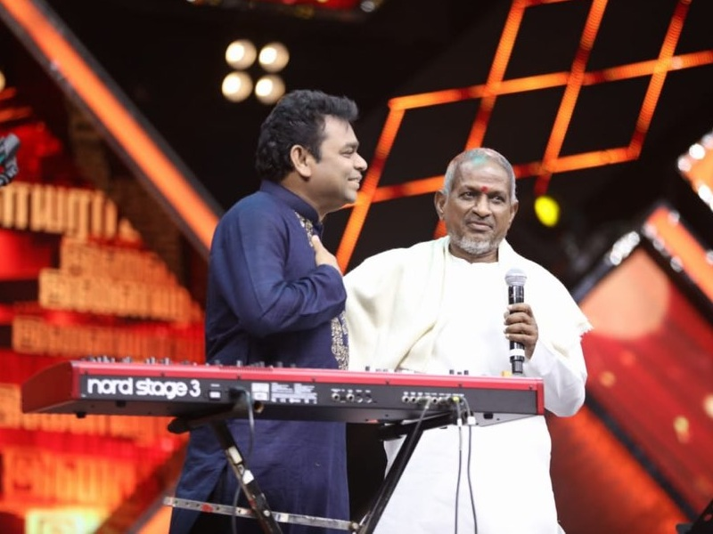

About MUSIChero
Music is a universal vibe
ALWAYS VIBE WITH MUSICMusichero Music improves your health and wellbeing A study from Harvard has shown that relaxing music may lower blood pressure and heart rate after physical exertion. It can also improve mood and reduce anxiety and through bringing people together, can be an antidote to loneliness and social isolation. Creative Commons Attribution 3.0 Licence. This means you can use it for personal or commercial projects. The only thing I ask is a link back to my website (doesn't have to be in the footer, any link will do).
Music is generally defined as the art of arranging sound to create some combination of form, harmony, melody, rhythm, or otherwise expressive content.
AR.RAHMAN AND ILAYARAJA
Who is a greater musician - A R Rahman or Ilaiyaraaja? This is often the focus of vigorous contention between fans of these extremely talented music directors. There are many parallels in their career and their lives have intertwined in interesting ways. Both hail from Tamil Nadu, and began learning music under Master Dhanraj. They were both awarded the Padma Bhushan, India's third highest civilian honor in 2010. Incidentally, both lost their fathers at an early age and were brought up by their mothers. Both have three children. In his formative years, A R Rahman worked as a keyboardist in the troupe of Ilaiyaraaja and Ilaiyaraaja rented musical instruments that once belonged to Rahman's father...
ANIRUDH
His debut song "Why This Kolaveri Di", composed for the 2012 film 3, went viral across the globe and has achieved over 400 million views on YouTube.[3] A.R. Murugadoss signed him to compose music for Kaththi (2014) starring Vijay,[4] which included the viral hit "Selfie Pulla".[5] The soundtrack for the film became Anirudh's highest profile soundtrack until he was signed to compose music for Rajinikanth's Petta in 2019.[5].
KOLLYWOOD MUSIC
What is the famous music of Tamil Nadu? Music of Tamil Nadu - Wikipedia Pann, which is the classical music form of Southern India, has a long history in Tamil Nadu. Later the name was mistakenly changed as Carnatic music. Even today Pannisai is sung in temple festivals. Tamil Nadu has produced a number of famous performers, as well as a closely related classical dance form Bharatha Natyam.